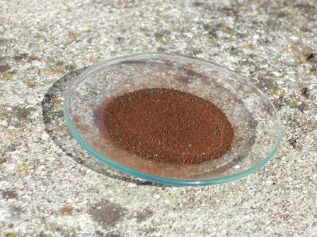
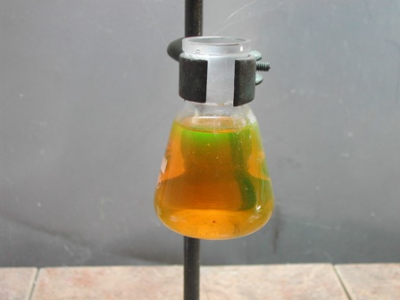
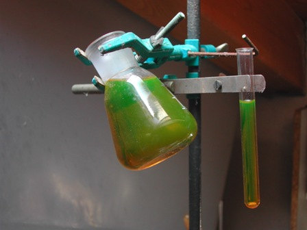

Ciò che vado a descrivere è una via di mezzo tra una vera sintesi, con la sua bella procedura particolareggiata, e un "esperimento", giocato con modalità più semplificate.
L'ho fatto principalmente per tre motivi:
1- avevo messo da parte per una futura occasione (questa) un vecchio .pdf della Columbia University reperito non mi ricordo più dove contenente lo spunto per una sintesina attendibile
2- a suo tempo avevo preparato il componente principale per la reazione, ovvero l'acido 3-nitroftalico. Quale migliore occasione per renderlo utile?
3- volevo verificare "quanto" la sostituzione di un nitrogruppo nella fluoresceina ne attenuasse le caratteristiche di fluorescenza, secondo quanto si legge in bibliografia
Non potendo nitrare direttamente la fluoresceina occorre partire da un componente contenente già il nitrogruppo nella posizione voluta, che verrà condensato con la resorcina, come si era fatto in altra occasione per la sintesi della fluoresceina.
Per far qualcosa di diverso dalla fonte sulla quale mi sono basato avrei potuto usare l'acido 4-nitroftalico, ma ne avevo poco e non sarebbe cambiato granchè.
Materiale occorrente:
- acido 3-nitroftalico
- resorcina
- sodio carbonato
- etanolo
- vetreria opportuna
La sintesi-esperimento è semplicissima, ed anche se porta ad un prodotto non certamente puro rende perfettamente l'idea di quanto mi ero proposto al suindicato punto 3.
Porre in un palloncino da 100 ml 3 grammi di acido 3-nitroftalico e altrettanta quantità di resorcina e scaldare fino a 195°, mantenendo questa temperatura fino a che la massa solidifica.
Ho inserito nella massa il bulbo del termometro, utile anche per tenere i componenti opportunamente mescolati (lo so che non si dovrebbe fare, che il termometro non è un agitatore, eccetera ... ma io uso da sempre questo metodo quando devo leggere la temperatura giusta, senza mai aver rotto un termometro).
Quando la massa è quasi solidificata (non ci vuole molto) lasciar raffreddare fino ad un centinaio di gradi ed aggiungere una soluzione bollente di Na2CO3, mescolando fino a portare tutto (o quasi) in soluzione per salificazione del prodotto.

La soluzione di 3-nitrofluoresceina sodica sarà di colore giallo scurissimo, opaca alla luce.
Filtrare e riprecipitare la sostanza (insolubile quando non salificata) con HCl a media concentrazione fino a pH acido, ottenendo una polvere di color ruggine.
Filtrare su buchner sotto vuoto e lavare accuratamente con acqua.
Ho provato a cristallizzare da etanolo bollente, ma con scarsi risultati poichè non si riesce a vedere quando la sostanza è sciolta e comunque per raffreddamento precipita una polvere microcristallina rugginosa di poca soddisfazione estetica (e sicuramente di non eccellente purezza); ergo, per i semplici fini di questa semisintesi, mi accontento di come si presenta.

La fluorescenza di questo nitroderivato conferma le aspettative, essendo di gran lunga meno intensa di quella della fluoresceina vera e propria; il potere colorante è comunque grandissimo perchè ne basta una traccia per colorare in giallo una gran quantità d'acqua, una volta che la sostanza è resa solubile per salificazione in ambiente basico.
Vista per riflessione la tonalità della fluorescenza è la medesima della fluoresceina sodica.
Ecco un paio di foto, purtroppo fatte in precarie condizioni di luce, che evidenziano il colore per trasparenza e riflessione di una soluzione "diluitissima" di prodotto.


E se ci fossero più nitrogruppi?
La fluorescenza scemerebbe sempre di più, fino a sparire completamente con quattro -NO2.